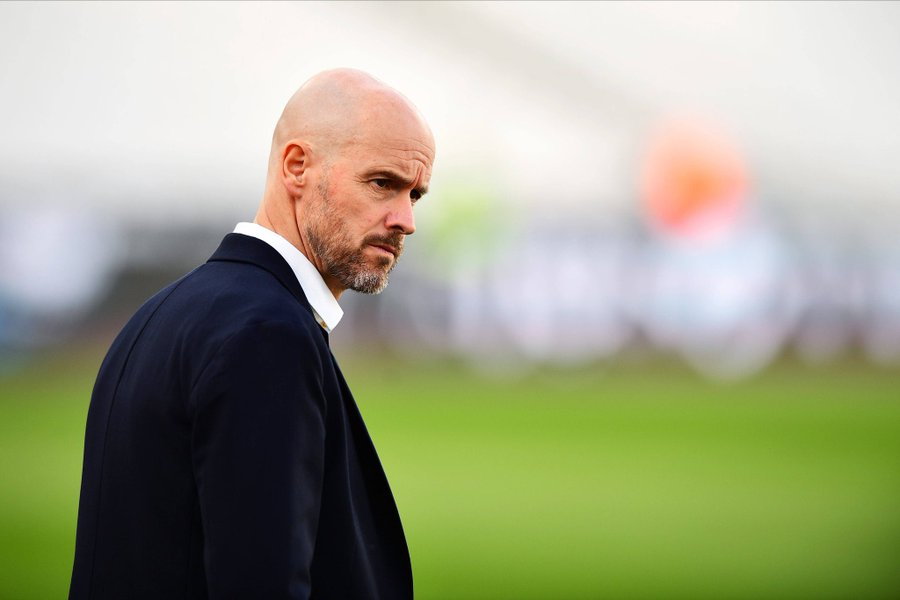
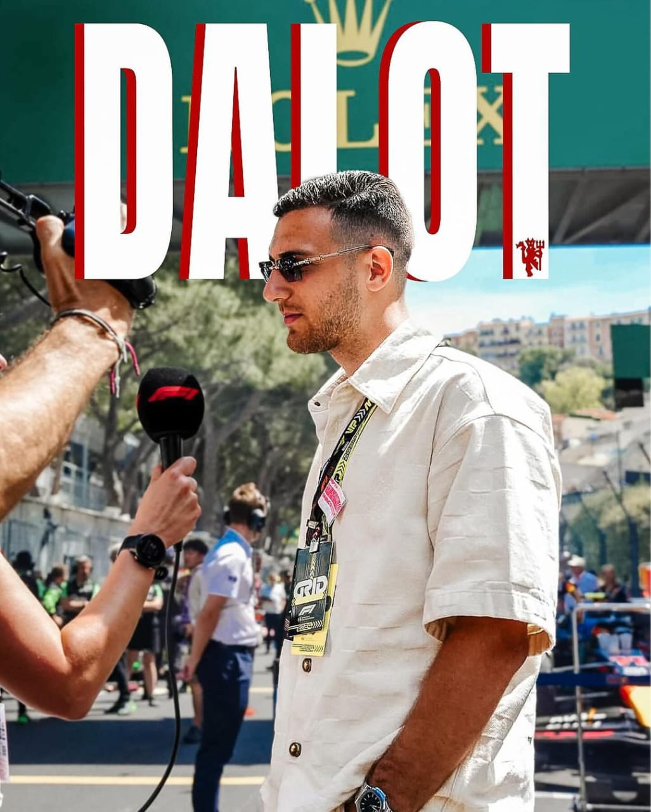
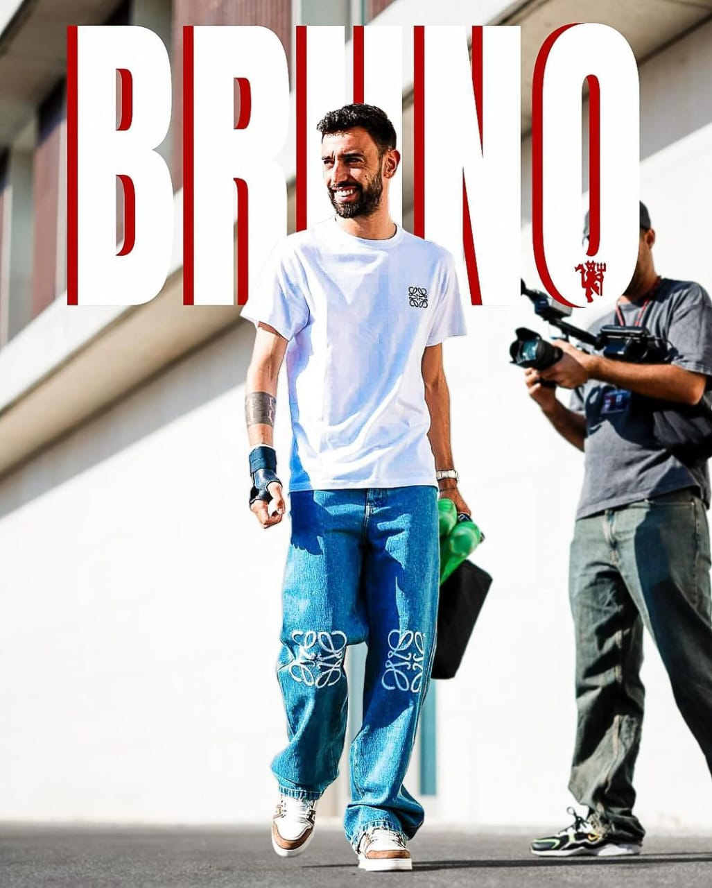
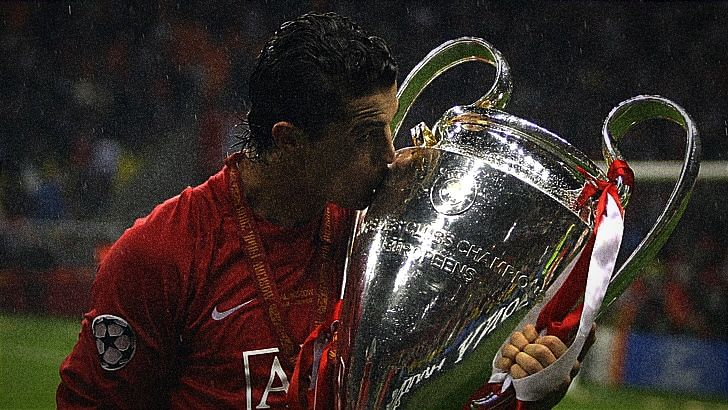
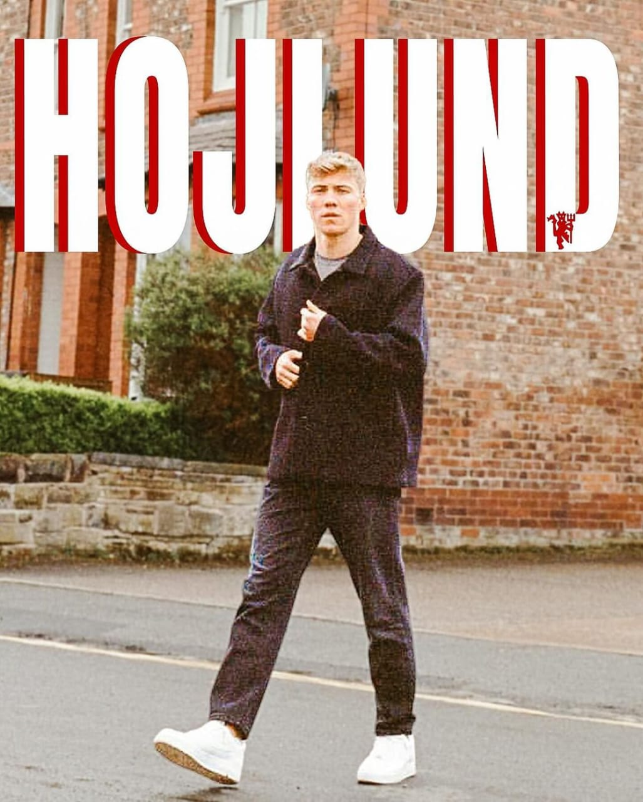
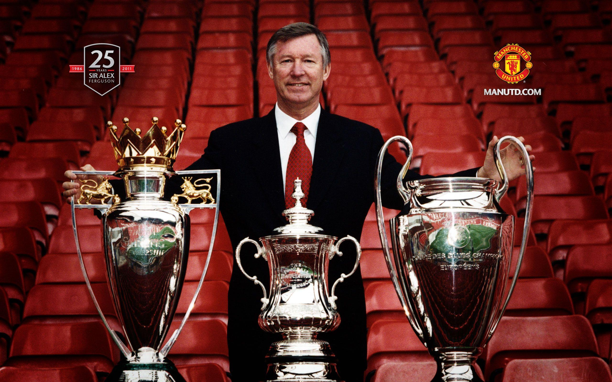

Home
About
Career
Services
Contact
Dash
Home
About
Career
Services
Contact
Dash

Erik ten Hag is a Dutch football manager currently serving as the head
coach of Manchester United. He took on this role in April 2022,
becoming the first Dutch manager to lead the club. Ten Hag is renowned
for his tactical acumen, attention to detail, and ability to develop
young talentsBefore joining Manchester United, Ten Hag achieved
significant success with Ajax Amsterdam, where he won multiple
Eredivisie titles and led the team to the semi-finals of the UEFA
Champions League in the 2018-2019 season. His tenure at Ajax was
marked by a distinctive attacking style of play, disciplined defensive
organization, and a focus on nurturing young players from the club's
famed academy. At Manchester United, Ten Hag has been tasked with
restoring the club to its former glory, focusing on building a
cohesive and competitive team. His approach emphasizes high pressing,
quick transitions, and fluid attacking movements, aiming to bring a
more modern and dynamic style of football to Old Trafford.





Sir Alex Ferguson is a legendary Scottish football manager best known
for his long and extraordinarily successful tenure as the manager of
Manchester United. Born on December 31, 1941, Ferguson managed the
club from 1986 to 2013, establishing himself as one of the greatest
managers in the history of football. Under Ferguson's leadership,
Manchester United experienced an unprecedented era of success. He
guided the team to 13 Premier League titles, 5 FA Cups, 4 League Cups,
and 2 UEFA Champions League titles, among numerous other domestic and
international honors. His ability to build and rebuild successful
teams over different eras, along with his skill in nurturing young
talents and making astute tactical decisions, played a crucial role in
the club's dominance. Ferguson's management style was characterized by
his motivational skills, strategic acumen, and an unyielding drive for
excellence. He was known for his "hairdryer treatment," an intense
form of verbal dressing-down used to motivate players, and his keen
eye for talent, often signing and developing players who would go on
to become superstars. Even after his retirement in 2013, Sir Alex
Ferguson remains a highly influential figure in football, and his
legacy at Manchester United and in the sport as a whole is enduring
and profound.

Manchester United is one of the most successful and popular football
clubs in the world, with a storied history that spans over a century.
The club was founded in 1878 as Newton Heath LYR F.C. and was renamed
Manchester United in 1902. Based in Manchester, England, the club has
a rich tradition and a massive global fanbase. Known as the Red
Devils, they play their home matches at Old Trafford, a stadium often
referred to as the "Theatre of Dreams" with a capacity of over 74,000.
Manchester United has an illustrious history filled with numerous
domestic and international titles. The club has won 20 English league
titles, more than any other team in English football. They have also
claimed 12 FA Cups, 5 League Cups, and 3 UEFA Champions League titles.
Additionally, the club has secured other significant trophies,
including the FIFA Club World Cup, the UEFA Europa League, and the
UEFA Super Cup. The club is renowned for its attacking style of play
and a strong tradition of youth development, epitomized by the famous
"Class of '92," which included players like David Beckham, Ryan Giggs,
Paul Scholes, Gary Neville, and Nicky Butt. These homegrown talents
played pivotal roles in the club's success during the 1990s and 2000s.
Manchester United's golden era came under the management of Sir Alex
Ferguson, who took charge in 1986 and managed the team until his
retirement in 2013. Ferguson's tenure is marked by unprecedented
success, including 13 Premier League titles, 5 FA Cups, and 2 UEFA
Champions League titles. His leadership, tactical acumen, and ability
to build and rebuild successful teams across different eras cemented
his legacy as one of the greatest football managers of all time. The
club has been home to numerous football legends, including Sir Bobby
Charlton, George Best, Eric Cantona, Cristiano Ronaldo, and Wayne
Rooney. These players have not only brought glory to the club but have
also become iconic figures in world football. Manchester United's
rivalries are a significant part of its identity. The club has intense
rivalries with Liverpool, known as the North West Derby, and with
Manchester City, known as the Manchester Derby. These matches are
among the most anticipated fixtures in the football calendar and are
known for their fierce competition and passionate fanbase. Off the
pitch, Manchester United is also a commercial powerhouse. The club has
a vast global following and lucrative sponsorship deals, making it one
of the wealthiest sports teams in the world. The club's brand and
merchandising efforts extend across the globe, from Europe to Asia and
the Americas. Beyond football, Manchester United is involved in
various charitable activities and community projects through the
Manchester United Foundation. The foundation aims to make a positive
impact on the lives of young people in the local community and beyond,
focusing on education, health, and social inclusion. In summary,
Manchester United is a club with a rich history, a tradition of
success, and a global reach. Its achievements on the field, iconic
players, legendary managers, and deep-rooted rivalries make it one of
the most revered football clubs in the world.